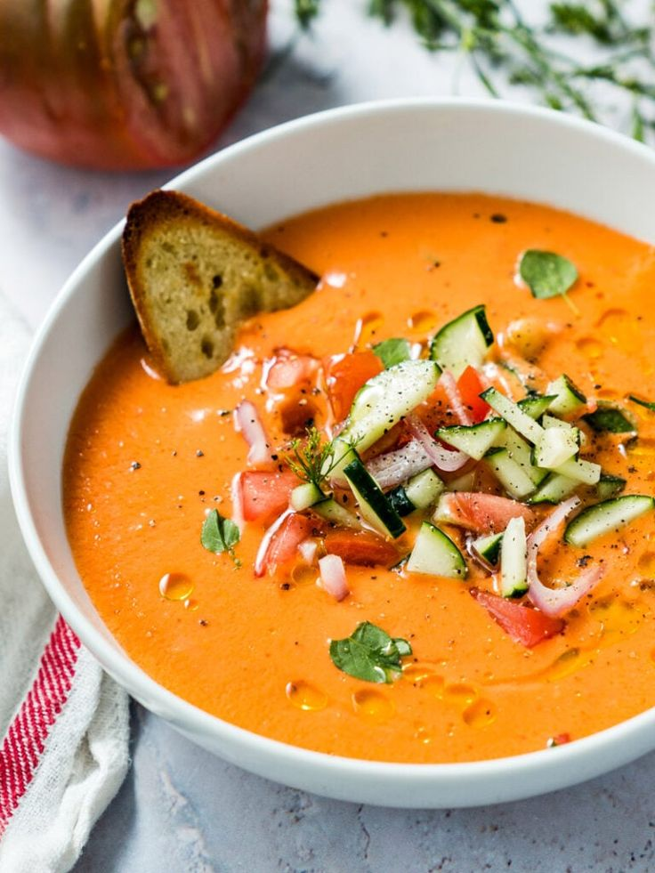

Paella
Paella
- Spanish: Paella es un plato de arroz originario de Valencia, cocido tradicionalmente en una sartén
ancha y poco profunda. Combina arroz, azafrán, verduras y proteínas como mariscos (gambas,
mejillones, calamares) o carnes como pollo y conejo. El azafrán le da al plato su característico color
dorado y sabor intenso
- English: Paella is a rice dish originating from Valencia, traditionally cooked in a wide, shallow pan. It
blends rice, saffron, vegetables, and proteins such as seafood (shrimp, mussels, squid) or meats like
chicken and rabbit. The saffron lends the dish its signature golden color and rich flavor.
 Tortilla Española
Tortilla Española
Spanish: También conocida como Tortilla de Patatas, es una tortilla gruesa hecha de huevos,
patatas finamente cortadas y, a veces, cebollas. Se cocina a fuego lento hasta que esté dorada y se puede
servir caliente o a temperatura ambiente, comúnmente disfrutada como tapa o comida ligera.
English: Also known as Tortilla de Patatas, this is a thick omelet made from eggs, thinly sliced
potatoes, and sometimes onions. It is slowly cooked until golden brown and can be served hot or at
room temperature, often enjoyed as a tapa or light meal.
Gazpacho
Spanish: Gazpacho es una sopa fría y refrescante hecha principalmente de tomates, pepinos,
pimientos, ajo, cebollas y pan duro. Este plato, que se sirve frío, es un alimento básico de la cocina
andaluza y es ideal para refrescarse en los días de calor.
English: Gazpacho is a cold, refreshing soup made primarily of tomatoes, cucumbers, bell peppers,
garlic, onions, and stale bread. This dish, often served chilled, is a staple in Andalusian cuisine and
perfect for cooling down in the summer heat.
 Jamón Ibérico
Jamón Ibérico
Spanish: Jamón Ibérico es un tipo de jamón curado, considerado una delicadeza en España,
elaborado con cerdos ibéricos que suelen alimentarse de bellotas. Tiene un sabor profundo y a nuez con
una textura tierna y fundente, y se sirve comúnmente en finas lonchas como aperitivo.
English: Jamón Ibérico is a type of dry-cured ham, considered a delicacy in Spain, made from
Iberian pigs that are often fed acorns. It has a deep, nutty flavor with a tender, melt-in-your-mouth
texture and is commonly served in thin slices as an appetizer.
 Patatas Bravas
Patatas Bravas
Spanish: Patatas Bravas son trozos de patata crujientes y dorados, acompañados de una salsa
picante a base de tomate y, a veces, alioli. Esta popular tapa es conocida por sus sabores intensos y
ahumados y niveles variables de picante, según la región y la preparación.
English: Patatas Bravas are crispy, golden-fried potato cubes accompanied by a spicy tomato-based
sauce and sometimes aioli. This popular tapa is known for its bold, smoky flavors and varying levels of
heat, depending on the region and preparation